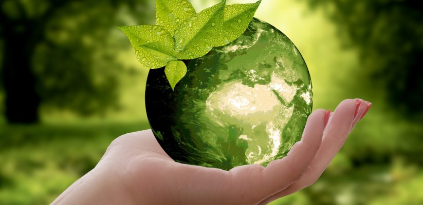
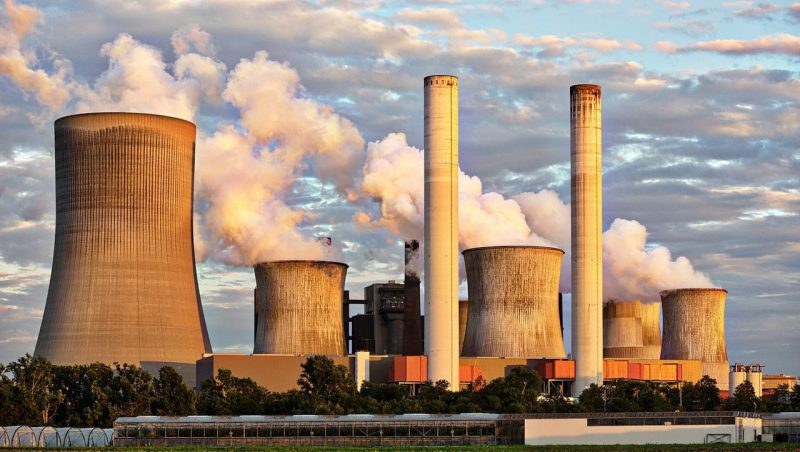
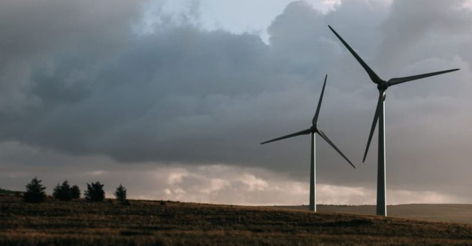
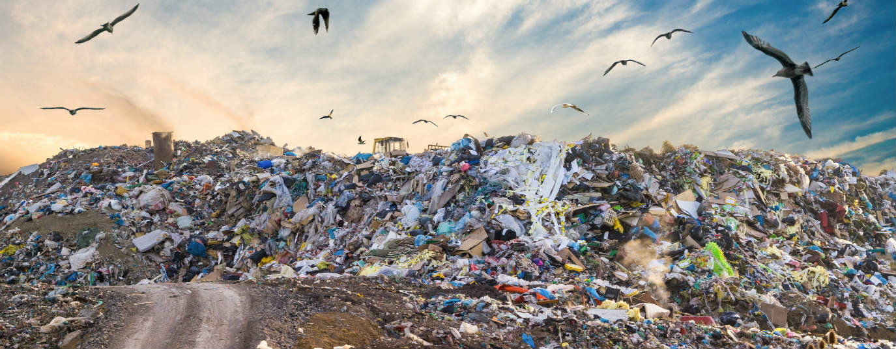
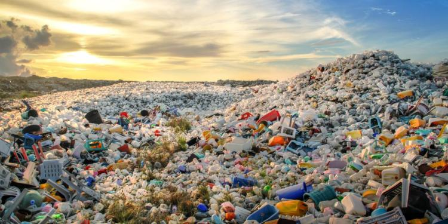

MEDIO AMBIENTE

¿Qué es medio ambiente?
El medio ambiente es el espacio en el que se desarrolla la vida de los seres vivos y que permite la interacción de los mismos. Sin embargo este sistema no solo está conformado por serers vivos, sino también por elementos abioticos (sin vida) y por elementos artificiales.
Cuando se habla de seres vivos se hace referencia a los factores bióticos, sea flora, fauna o incluso los seres humanos. En oposición, los factores abióticos son aquellos que carecen de vida. Sin embargo estos elementos resultan esenciales para la subsistencia de los organismos vivos, como el aire, el suelo y el agua. Entre los elementos artificiales incluimos a las relaciones socioeconómicas, como la urbanización, los conflictos dentro de una sociedad, etc.
El medio ambiente, según otros autores, es considerado como la suma de las relaciones culturales y sociales, en un entorno, en momento histórico y un lugar en particular. Esto quiere decir que esta definición incluye las costumbres y el folklore dentro del concepto de medio ambiente, entre muchas otras cosas.
Contaminación del medio ambiente

A medida que la población comenzó a crecer y aumentar su tecnología, el impacto sobre el medio ambiente comenzó a ser mayor y más nocivo. El momento donde comenzó a agravarse exponencialmente el medio ambiente fue a partir de la Revolición Industrial, principalmente por la explotación de recursos minerales y fósiles.
De esta manera el equilibrio del sistema ambiental se perdió y la calidad de vida de muchos seres vivos se halla desde ese momento en muy malas condiciones y para algunos resulta incluso imposible adaptarse a los grandes cambios.
La contaminación ambiental es definida como la presencia de agentes químicos, físicos o biológicos en el ambiente que pueden tener efectos nocivos sobre la seguridad y salud de los seres vivos, sean estos animales, flora o humanos.
La contaminacion puede tener diversos orígenes, como los desechos de las industrias, la mega minería, o bien de origen doméstico, como por ejemplo los desechos de envases, y hasta pueden ser incluso comerciales, como los envoltorios.
Protección del medio ambiente

Para evitar la destrucción del medio ambiente y la supervivencia de los seres vivos y desarrollo humano, es necesario tomar los recaudos necesarios. En primer lugar es necesario hacer un buen uso de los recursos naturales, no utilizaron de manera indiscriminada y realizar tareas sustentables.
Además es necesario fijar la atención en cuestiones como el cambio climatico, la protección de la diversidad y población de flora y fauna, también a los bosques, y evitar la desertificación. Es también necesario tomar medidas frente al consumo y la producción.
Para llevar adelante la tarea de protección medioambiental es necesario que todos los actores de la sociedad tomen conciencia y se involucren, antes de que sea demasiado tarde. Esto hace referencia a que no solo desde los hogares y la vida cotidiana debemos llevar a cabo un cuidado del medio ambiente, sino que es necesario exigir a los estados y gobernantes que hagan lo mismo y lo promuevan, además de controlar el accionar de las industrias, empresas y de la comunidad científica.
¿Qué consecuencias tiene para nuestra calidad ambiental la producción de residuos?
Una visita a un vertedero “incontrolado” nos dará la respuesta. Los residuos urbanos, si no se tratan adecuadamente, terminan siendo acumulados por millares de toneladas en barrancos y huecos del terreno. A continuación, la materia orgánica se pudre y fermenta, produciendo malos olores y grandes cantidades de gas metano. El agua de lluvia circula a través de la masa de basura podrida y puede acabar contaminando ríos y arroyos a mucha distancia.
Además, resulta claramente insostenible fabricar y distribuir millones de toneladas de objetos de materiales diversos para que terminen, pocos días después de su consumo, atestando vertederos y plantas de tratamiento. En este caso, resulta mucho más lógica la opción de envases reutilizables.

¿Qué cantidad de residuos producimos?
No es fácil responder a esta pregunta: cada persona y cada hogar es un mundo, las regiones más ricas producen más residuos que las de menos renta, las ciudades producen más por persona que las áreas rurales. No obstante, a grandes rasgos, la producción total de residuos urbanos en España se estima en unos 22 millones de toneladas, es decir, aproximadamente un kilo y medio diario por cada hombre, mujer y niño que habita en este país.
Para poner esta cifra en un punto de comparación, hay que decir que se trata de una cifra habitual en los países de la Unión Europea, tal vez ligeramente por debajo. Está algo por debajo de los más de 2 kilos por persona y día de los Estados Unidos, y muy por encima de los 300 gramos diarios -o menos- de muchos países en vías de desarrollo.

Consejos y acciones para cuidar el medioambiente
Te proponemos varios consejos sencillos para cuidar el medioambiente en y transmitir valores positivos:
Separa la basura. Desde pequeños es bueno que los niños aprendan a separar los residuos para que se puedan reciclar. Enséñales qué se tira en cada cubo y por qué se debe hacer así.
Usa productos que puedan reutilizarse. Hay muchos productos que se pueden usar varias veces para proteger la naturaleza. Por ejemplo, utiliza servilletas de tela en lugar de servilletas de papel.
Apaga las luces. Parece obvio, pero no nos damos cuenta de la cantidad de veces que encendemos la luz de una habitación que no ocupamos. Acostumbra a tus hijos a apagar la luz y cuando te marches de casa comprueba que todo está apagado.
Consume frutas y verduras ecológicas. Los productos ecológicos cuidan el medio ambiente porque en su producción no se utilizan fertilizantes ni otros productos contaminantes.
Evita dejar los aparatos enchufados. Recuerda que los aparatos que están apagados pero siguen enchufados consumen energía, por lo que es importante desenchufarlos.
Cierra los grifos correctamente. Cuando no utilices el agua, cierra el grifo y controla que no existan fugas.
Utiliza el termostato. Tanto para la calefacción como para el aire acondicionado es necesario utilizar un termostato. El consumo de energía de la calefacción baja cuando reduces en un solo grado la temperatura, y lo mismo ocurre si aumentas la temperatura un grado en el aire acondicionado.
Muévete en transporte público. La contaminación en las grandes ciudades proviene en gran medida de los coches; utiliza el transporte público para desplazarte y ayudarás a cuidar la naturaleza.
Lleva tus propias bolsas al supermercado. Cada vez son más los supermercados que venden las bolsas de plástico para evitar su uso y fomentar el reciclado. Llévate tus propias bolsas al supermercado y podrás utilizarlas varias veces.
Aprovecha la luz natural. Para reducir el consumo de luz eléctrica, abre las ventanas y sube las persianas para que entre la luz del sol en tu casa.
Cambia las bombillas de tu casa. Las bombillas de bajo consumo se calientan menos, consumen menos energía, alumbran igual y duran más.
Recicla todo lo que puedas. Antes de tirar ropa, libros o juguetes, piensa si puedes darles una segunda oportunidad para evitar gastar y comprar todo nuevo. Ahorrarás dinero y protegerás la naturaleza.
Planta árboles. Los árboles producen oxígeno y son esenciales para la naturaleza, así que planta un árbol en tu casa o en la comunidad donde vives.